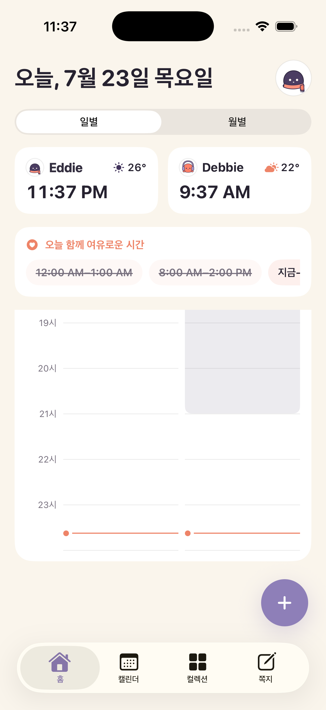

현지 시간과 날씨
상대의 현지 시간과 날씨를 바로.
FOR COUPLES ACROSS TIME ZONES
상대가 자는 중인지, 회의 중인지, 지금 둘 다 비는지.
각자 쓰던 캘린더와 시차를 한 화면에서 맞춰봐요.
iPhone · 홈 화면 위젯 · iPhone 캘린더·Google Calendar 연동


02
THE PRESENT
자는 중인지, 회의 중인지, 둘 다 비는지 바로 봐요.
내 시간과 상대 시간을 한 화면에 나란히.
일정은 입력한 시간대를 기준으로 정확히 맞춰요.
둘 다 깨어 있고 비는 구간을 찾아줘요.
WHY WE MADE NARU
“지금 전화해도 되나?”, “내 저녁 9시가 거긴 몇 시지?” 그 작은 계산을 매일 덜어내려고 Naru를 시작했어요.
둘을 감시하는 기능은 빼고, 둘이 자주 보는 것만 담았습니다.
03
THE THINGS YOU SHARE
캘린더, 다음 만남, 짧은 쪽지를 한곳에 모아요.
CALENDAR · 01
iPhone 캘린더와 Google Calendar에서 공유할 것만 고르면 Naru와 위젯에 바로 합쳐져요. 일정은 각자의 현지 시간으로 정확히 바뀝니다.

COLLECTION · 02
맛집, 영화, 여행지를 둘이 한 목록에 모아요.

NOTES · 03
“오늘 끝나고 전화할래?”처럼 답을 재촉하지 않는 쪽지를 남겨요.

NARU PLUS
처음 연결되면 Plus 7일이 바로 시작돼요. 카드 등록도, 자동 결제도 없습니다.
MADE FOR TWO
실시간 위치는 받지 않아요.
둘의 기록을 광고에 쓰지 않아요.
연결을 끊으면 공유도 바로 멈춰요.

처음 연결하면 Plus 7일이 시작돼요. 카드 등록과 자동 결제는 없어요.
출시 알림 받고 먼저 써보기